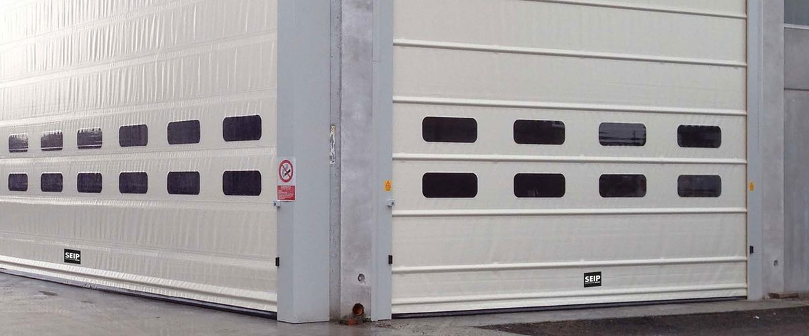
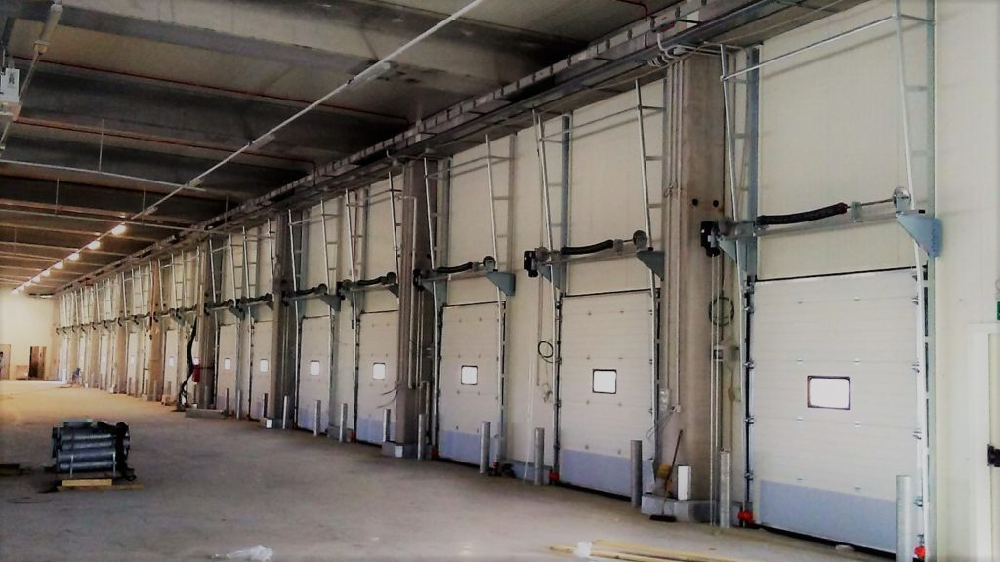
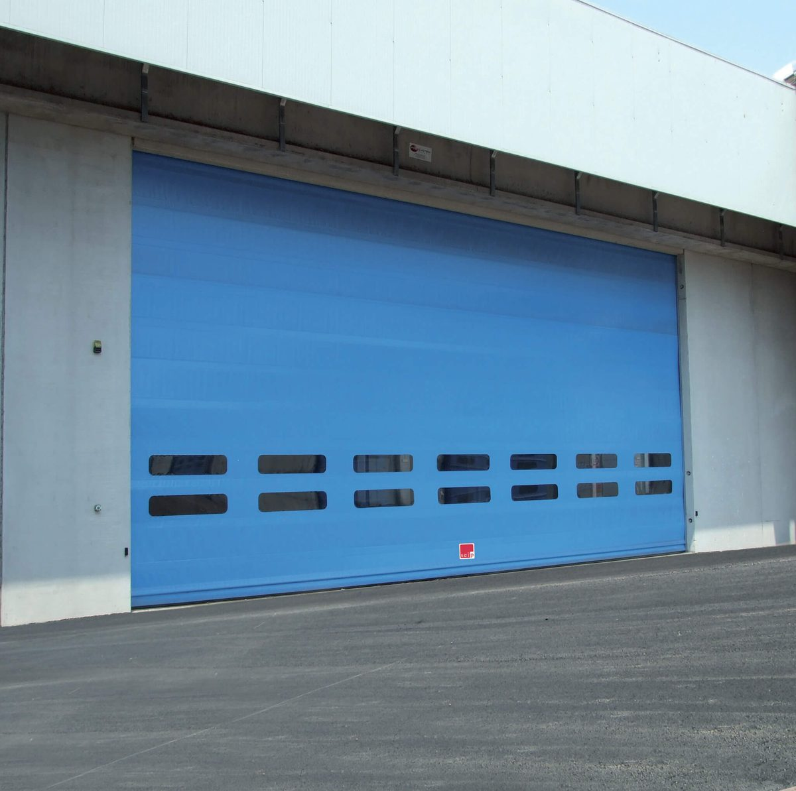
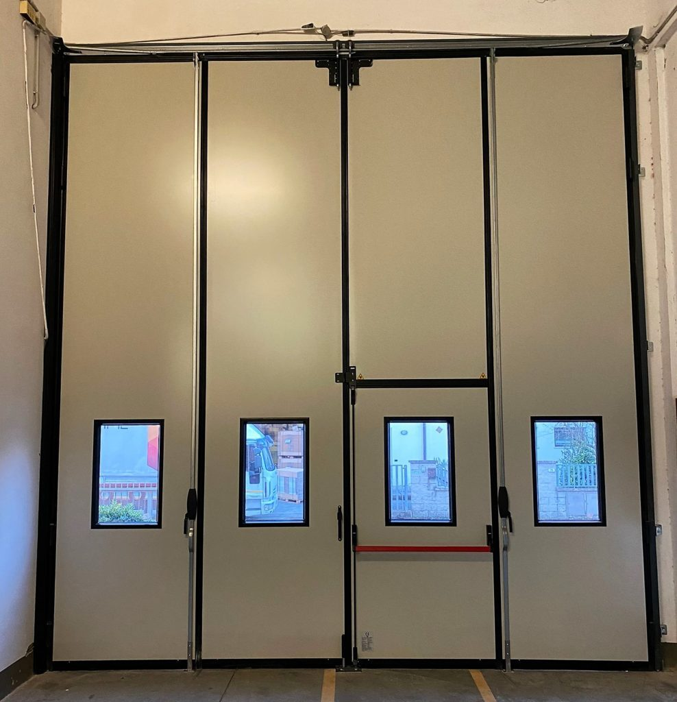
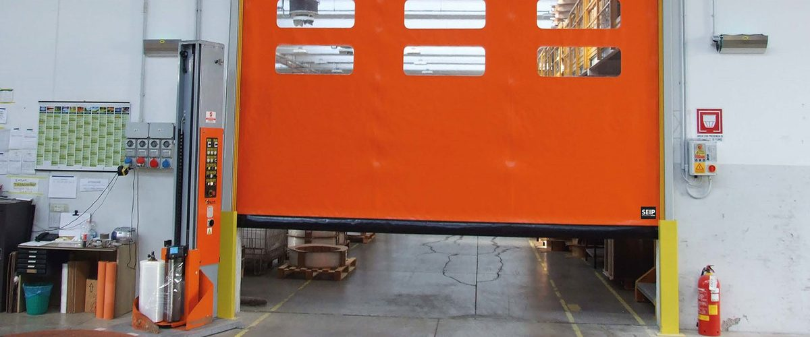
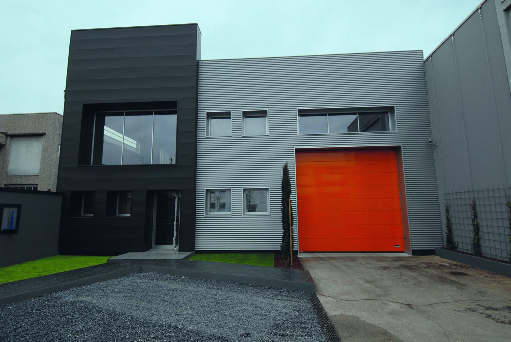

Industrie-Sektionaltor
Fährt senkrecht nach oben und unter die Decke. Wärmegedämmt und auch in großen Formaten lieferbar.
- Wärmegedämmte Paneele
- Große Formate für Hallentore
- Verglasung optional
Sektionaltore, Schnelllauftore, Rolltore und Falttore für Halle, Logistik und Werkstatt. Wartung, UVV-Prüfung und Reparatur übernehmen 23 eigene Servicetechniker.

Darum planen wir Industrietore nicht nur nach dem Öffnungsmaß. Wir fragen, wie oft das Tor fährt, was es aushalten muss und wo es steht. Danach halten unsere eigenen Techniker es zuverlässig in Betrieb.
Wie oft das Tor fährt, wie schnell es öffnen muss und wie viel Platz da ist: Das entscheidet. Wir sehen uns Ihre Halle vor Ort an und beraten Sie.

Fährt senkrecht nach oben und unter die Decke. Wärmegedämmt und auch in großen Formaten lieferbar.

Öffnet in Sekunden. Die Wärme bleibt drinnen, die Zugluft draußen, und der Verkehr an der Öffnung fließt schneller.

Rollt platzsparend über der Öffnung auf. Das Rollgitter lässt zusätzlich Blick und Luft durch.

Faltet sich seitlich zusammen. Bei sehr großen oder ungewöhnlich geformten Öffnungen oft die einzige Möglichkeit.

Industrietore müssen regelmäßig geprüft werden. Unsere 23 Servicetechniker übernehmen die UVV-Prüfung, dokumentieren den Zustand und beheben Mängel wenn möglich gleich vor Ort.
Mit einem Wartungsvertrag stehen Ihre Prüftermine fest, und im Störfall sind wir schnell bei Ihnen.
Wartungsvertrag anfragenOb Standardhalle oder Sonderöffnung: Wir bauen Ihr Tor auf Maß.
Elektroantrieb mit Radar, Induktionsschleife oder Ampel. Gemacht für Tore, die oft fahren.
Unsere Servicetechniker prüfen regelmäßig, Sie bekommen die Dokumentation für Ihre Unterlagen.
Gedämmte Paneele und Dichtungen halten die Halle warm und senken den Energieverbrauch.
Feste Prüftermine, dokumentierter Zustand und Vorrang, wenn es einmal klemmt.
23 eigene Servicetechniker helfen schnell, mit Ersatzteilen für gängige Fabrikate.
Richtwerte für Ihre Planung. Die genaue Ausführung legen wir beim Aufmaß gemeinsam fest.
| Bauarten | Industrie-Sektionaltor, Schnelllauftor, Rolltor, Rollgitter, Falttor |
|---|---|
| Breite und Höhe | Nach Maß, große Hallentore und Sonderformate auf Anfrage |
| Material | Stahl, Aluminium, Kunststoff-Lamellen (Schnelllauftore) |
| Zielgruppen | Logistik, Werkstätten, Feuerwehr und Rettungsdienste, Landwirtschaft, Parkhäuser |
| Steuerung | Handsender, Codetaster, Radar, Induktionsschleife, Ampelanlage |
| Sicherheit | Lichtschranken, Sicherheitsleisten, UVV-Prüfung nach Vorgabe |
| Wartung | Einzelprüfung oder Wartungsvertrag mit festen Terminen |
| Leistung | Beratung, Aufmaß, Lieferung, Montage, Wartung und Reparatur |
Das hängt von Öffnungsmaß, Taktung und Nutzung ab. Fahren ständig Stapler durch, lohnt sich ein Schnelllauftor. Wird das Tor seltener genutzt, reicht oft ein Sektionaltor. Rolltore und Falttore spielen ihre Stärken bei knappem Platz oder Sonderformen aus. Wir beraten Sie vor Ort.
Kraftbetätigte Tore müssen regelmäßig von einer befähigten Person geprüft werden. Mit einem Wartungsvertrag übernehmen das unsere Servicetechniker und dokumentieren das Ergebnis für Sie.
Mit Wartungsvertrag haben Sie Vorrang. Unsere Servicetechniker klären die Ursache am Telefon und kommen bei Bedarf mit Ersatzteilen für gängige Fabrikate.
Ja. Wir warten und reparieren auch Tore, die nicht von uns stammen, solange es Ersatzteile gibt. Sprechen Sie uns einfach an.
Beschreiben Sie uns kurz Ihre Anlage. Wir melden uns innerhalb eines Werktags.